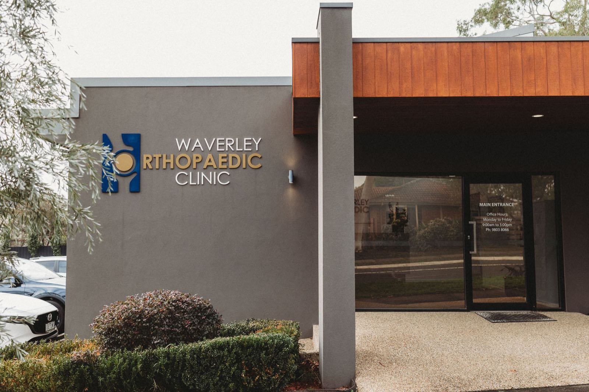

Consulting across south-east Melbourne and regional Victoria
Ravi consults across south-east Melbourne and regional Victoria and operates in both public and private hospital settings.
Consulting locations
Looking for an orthopaedic surgeon near you? Ravi holds regular clinics at each of the locations below, across south-east Melbourne, Gippsland and Phillip Island.
Waverley Orthopaedic Clinic
501 Waverley RoadMount Waverley VIC 3149
Regular Tuesday clinic. Open Mon–Tue 8:00 AM–5:00 PM, Wed–Fri 9:00 AM–5:00 PM. Wheelchair accessible entrance and parking.
St John of God Hospital
75 Kangan DriveBerwick VIC 3806
Wednesday clinic, 9:00 AM–5:00 PM. On-site paid parking (lot & garage). Wheelchair accessible entrance, restroom and parking.
Warragul Specialist Centre
197-199 Sutton StreetWarragul VIC 3820
Consults here once every 4 weeks, Friday morning. Wheelchair accessible entrance and parking.
Cowes Medical Centre
164 Thompson AvenueCowes VIC 3922
Consults here on a Friday, once a month. Free on-site parking. Wheelchair accessible entrance and parking.
Areas we serve
Mount Waverley Clinic
The Mount Waverley clinic also sees patients from across Melbourne's south-east inner suburbs, including Ashwood, Ashburton, Burwood, Chadstone, Glen Iris, Glen Waverley, Malvern, Murrumbeena, Notting Hill, Oakleigh and Oakleigh South, and Wantirna South.
Berwick Clinic
Patients also travel to the Berwick clinic from across the Casey and Cardinia region, including Beaconsfield, Clyde and Clyde North, Dandenong and Dandenong South, Doveton, Endeavour Hills, Hallam, Narre Warren and Narre Warren South, Officer and Officer South, Pakenham and Pakenham South, and Cranbourne.
Warragul Clinic
The Warragul clinic also sees patients from across West and Central Gippsland, including Drouin and Drouin East, Darnum, Yarragon and Yarragon South, Trafalgar, Morwell, Lardner, Lillico, Bona Vista, Nilma North, Neerim South, Warragul South and Korumburra.
Cowes & Phillip Island Clinic
The Cowes clinic also sees patients from across Phillip Island and South Gippsland, including Ventnor, Kilcunda, Newhaven, San Remo, Inverloch, Korumburra, Cape Paterson and Cape Woolamai.